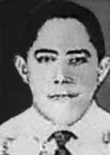

Antogildo
Pascoal
Viana
CIRCUNSTÂNCIAS DA MORTE
Antogildo Pascoal Viana morreu no dia 8 de abril de 1964, no Hospital do Instituto de Aposentadoria e Pensões dos Trabalhadores e Cargas (IAPETC) – atual Hospital Federal de Bonsucesso. Segundo a versão oficial, ele teria morrido ao projetar-se da janela do 5º andar do edifício do IAPETC, localizado na Avenida Brasil, na cidade do Rio de Janeiro.
Passados mais de 50 anos da morte dessa liderança sindical, as investigações realizadas não nos autorizam a apresentar conclusão irrefutável acerca das circunstâncias da morte de Antogildo. É importante mencionar, no entanto, que a versão de suicídio para a morte de Antogildo tem sido contestada desde a publicação da obra ‘Torturas e Torturados’, de autoria de Márcio Moreira Alves, em 1966. A ocorrência, no mesmo período, de outros relatos de lideranças sindicais e políticas que supostamente haviam cometido suicídio, serviu de base para a contestação apresentada na obra. De fato, ao longo de todo o regime ditatorial, tornou-se prática comum dos agentes da ditadura simularem as execuções, que promoviam, como se suicídios fossem.
Por outro lado, há casos que apresentam fortes indícios de que o suicídio tenha sido o último recurso daqueles que foram ou seriam submetidos às circunstâncias degradantes que caracterizavam o cotidiano dos militantes aprisionados pelos órgãos da repressão. Pesquisas realizadas pela Comissão Nacional da Verdade revelaram a existência de inúmeros elementos de convicção que permitem apontar que Antogildo Pascoal foi vítima de perseguição política e cometeu suicídio em decorrência das sequelas psicológicas, oriundas da violência a que fora submetido, que o atormentaram nos últimos dias de sua vida.
A primeira evidência que merece destaque é o bilhete de suicídio, que fora escrito por Antogildo e apresentado por sua viúva no processo encaminhado à Comissão Especial de Mortos e Desaparecidos Políticos (CEMDP). No texto, redigido na cidade do Rio de Janeiro, Antogildo solicita que seus restos mortais sejam transportados e enterrados no bairro da Colônia Oliveira Machado, em Manaus. Escrito pouco antes da morte de Antogildo, o bilhete de suicídio apresenta em seus trechos finais a razão que levou o autor ao suicídio: “Não podia suportar mais tanta doença e fraqueza mental. Sempre fui honesto para com todos e tudo, inclusive a pátria.”
Em certidão que fora expedida pela Agência Brasileira de Inteligência (Abin), anexada ao processo apresentado junto à CEMDP, consta a informação de que Antogildo Pascoal Viana já estava sendo vigiado pelas autoridades do Estado brasileiro. Os registros da Abin informam que em 1962, Antogildo, “na condição de presidente do Sindicato dos Estivadores de Manaus, participou da greve geral, que paralisou o porto da cidade”. Inúmeros documentos localizados no Arquivo Nacional do Rio de Janeiro pelos pesquisadores da CNV indicam que, anos após a morte de Antogildo, os membros das comunidades de informação e repressão continuavam a referir-se a Antogildo como perigoso comunista e agitador social, imputando culpa a outros militantes políticos que o conheceram ou que com ele conviveram.
O corpo de Antogildo, contrariando o desejo por ele expresso no bilhete de suicídio, fora enterrado no cemitério São Francisco Xavier, no bairro do Caju, no Rio de Janeiro. Quando a família de Antogildo Pascoal procurou trasladar o corpo para Manaus, descobriu que os restos mortais haviam desaparecido da cova seis meses após o enterro. O histórico da atuação sindical de Antogildo e seu envolvimento político com temas relacionados às demandas trabalhistas constituem indício adicional para a convicção firmada sobre o caso. O suicídio foi cometido em consequência de sequelas oriundas do tratamento violento e da perseguição a que fora submetido.
Antogildo Pascoal Viana died on April 8, 1964, at the Hospital of the Instituto de Aposentadoria e Pensões dos Trabalhadores e Cargas (IAPETC) – currently the Federal Hospital of Bonsucesso. According to the official version, he died after falling from the 5th floor window of the IAPETC building, located on Avenida Brasil, in the city of Rio de Janeiro.
More than 50 years after the death of this union leader, the investigations carried out do not authorize us to present an irrefutable conclusion about the circumstances of Antogildo's death. It is important to mention, however, that the suicide version of Antogildo's death has been contested since the publication of the work 'Torturas e Torturados', written by Márcio Moreira Alves, in 1966. The occurrence, in the same period, of other reports of union and political leaders who had allegedly committed suicide, served as the basis for the contestation presented in the work. In fact, throughout the dictatorial regime, it became a common practice for agents of the dictatorship to simulate the executions, which they promoted, as if they were suicides.
On the other hand, there are cases that present strong evidence that suicide was the last resort of those who were or would be subjected to the degrading circumstances that characterized the daily lives of militants imprisoned by repressive bodies. Research carried out by the National Truth Commission revealed the existence of numerous elements of conviction that allow us to point out that Antogildo Pascoal was a victim of political persecution and committed suicide as a result of the psychological consequences, arising from the violence to which he was subjected, which tormented him in the last days of his life.
The first piece of evidence that deserves to be highlighted is the suicide note, which was written by Antogildo and presented by his widow in the case sent to the Special Commission on Political Deaths and Disappearances (CEMDP). In the text, written in the city of Rio de Janeiro, Antogildo requests that his remains be transported and buried in the Colônia Oliveira Machado neighborhood, in Manaus. Written shortly before Antogildo's death, the suicide note presents in its final sections the reason that led the author to commit suicide: "I could no longer bear so much illness and mental weakness. I have always been honest with everyone and everything, including the country."
In a certificate issued by the Brazilian Intelligence Agency (Abin), attached to the process presented to CEMDP, there is information that Antogildo Pascoal Viana was already being monitored by Brazilian State authorities. Abin records inform that in 1962, Antogildo, “as president of the Manaus Dockworkers Union, participated in the general strike, which paralyzed the city's port”. Numerous documents located in the National Archives of Rio de Janeiro by CNV researchers indicate that, years after Antogildo's death, members of the information and repression communities continued to refer to Antogildo as a dangerous communist and social agitator, attributing blame to other political activists who knew him or who lived with him.
Antogildo's body, contrary to the wishes he expressed in the suicide note, was buried in the São Francisco Xavier cemetery, in the Caju neighborhood, in Rio de Janeiro. When Antogildo Pascoal's family sought to move the body to Manaus, they discovered that the remains had disappeared from the grave six months after burial. Antogildo's history of union activity and his political involvement with issues related to labor demands constitute additional evidence for the conviction established about the case. The suicide was committed as a result of consequences arising from the violent treatment and persecution to which he was subjected.
Antogildo Pascoal Viana falleció el 8 de abril de 1964, en el Hospital del Instituto de Aposentadoria e Pensões dos Trabalhadores e Cargas (IAPETC), actualmente Hospital Federal de Bonsucesso. Según la versión oficial, murió tras caer desde la ventana del quinto piso del edificio IAPETC, ubicado en la Avenida Brasil, en la ciudad de Río de Janeiro.
A más de 50 años de la muerte de este dirigente sindical, las investigaciones realizadas no nos autorizan a presentar una conclusión irrefutable sobre las circunstancias de la muerte de Antogildo. Es importante mencionar, sin embargo, que la versión suicida de la muerte de Antogildo ha sido cuestionada desde la publicación de la obra 'Torturas e Torturados', escrita por Márcio Moreira Alves, en 1966. La aparición, en el mismo período, de otros informes de dirigentes sindicales y políticos que supuestamente se habían suicidado, sirvió de base para la impugnación presentada en la obra. De hecho, durante todo el régimen dictatorial se convirtió en una práctica común que los agentes de la dictadura simularan las ejecuciones que promovían como si fueran suicidios.
Por otro lado, hay casos que presentan pruebas contundentes de que el suicidio fue el último recurso de quienes fueron o serían sometidos a las circunstancias degradantes que caracterizaron la vida cotidiana de los militantes encarcelados por órganos represivos. Las investigaciones realizadas por la Comisión Nacional de la Verdad revelaron la existencia de numerosos elementos de convicción que permiten señalar que Antogildo Pascoal fue víctima de persecución política y se suicidó como consecuencia de las consecuencias psicológicas, derivadas de la violencia de la que fue sometido, que lo atormentó en los últimos días de su vida.
La primera prueba que merece destacarse es la nota de suicidio escrita por Antogildo y presentada por su viuda en el caso enviado a la Comisión Especial sobre Muertes y Desapariciones Políticas (CEMDP). En el texto, escrito en la ciudad de Río de Janeiro, Antogildo solicita que sus restos sean transportados y enterrados en el barrio Colônia Oliveira Machado, en Manaos. Escrita poco antes de la muerte de Antogildo, la nota de suicidio presenta en sus apartados finales el motivo que llevó al autor a suicidarse: "Ya no podía soportar tanta enfermedad y debilidad mental. Siempre he sido honesto con todos y con todo, incluido el país".
En un certificado emitido por la Agencia Brasileña de Inteligencia (Abin), adjunto al proceso presentado ante el CEMDP, se informa que Antogildo Pascoal Viana ya estaba siendo monitoreado por autoridades del Estado brasileño. Los registros de la Abin informan que en 1962, Antogildo, “como presidente del Sindicato de Portuarios de Manaos, participó en la huelga general, que paralizó el puerto de la ciudad”. Numerosos documentos localizados en el Archivo Nacional de Río de Janeiro por investigadores del CNV indican que, años después de la muerte de Antogildo, miembros de las comunidades de información y represión continuaron refiriéndose a Antogildo como un peligroso comunista y agitador social, atribuyendo culpas a otros activistas políticos que lo conocían o convivían con él.
El cuerpo de Antogildo, contrariamente a los deseos que expresó en la nota de suicidio, fue enterrado en el cementerio São Francisco Xavier, en el barrio de Caju, en Río de Janeiro. Cuando la familia de Antogildo Pascoal intentó trasladar el cuerpo a Manaos, descubrió que los restos habían desaparecido de la tumba seis meses después del entierro. Los antecedentes de actividad sindical de Antogildo y su involucramiento político en temas relacionados con reivindicaciones laborales constituyen evidencia adicional a la condena establecida sobre el caso. El suicidio se cometió como consecuencia de las consecuencias derivadas del trato violento y persecución de que fue sometido.